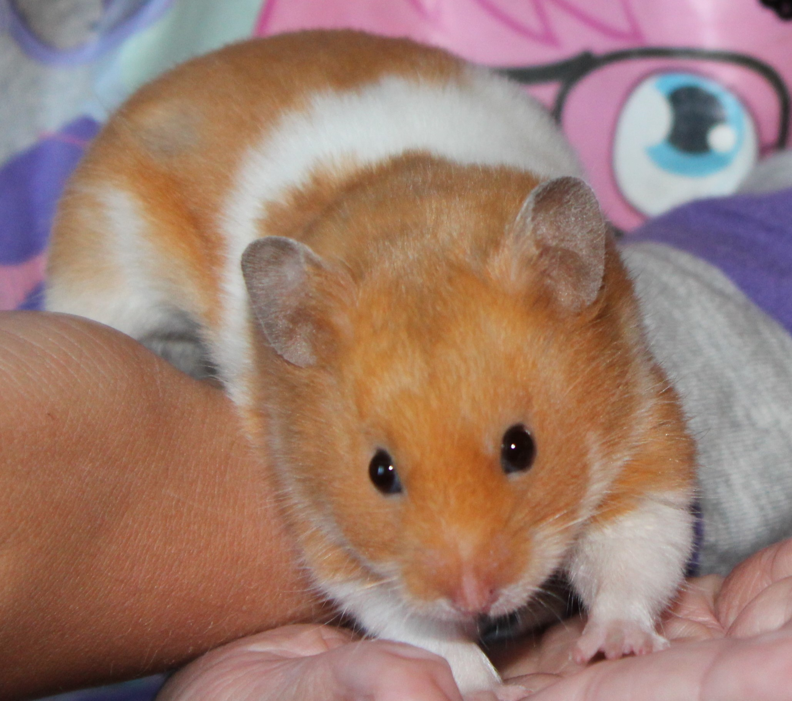

My ancestors ran wild in Syria.
27-Sep-2017 | Milku
What did yours do?
Apparently, today is Ancestor Appreciation Day.
I certainly appreciate mine as I've inherited from them great looks and intelligence. I just wish my wild Syrian forebears had had the sense to stay hidden when humans were around.

I think the jury is still out on whether my humans will be appreciated in the future...especially if some of their less endearing traits are passed down the generations. Some struggle to be appreciated now!
My humans love watching all the genealogy programmes on TV even if it seems to make them discontented with the quality of their own ancestors...no royal connections there...no interesting scandals. And, believe me, they've looked.
After the recent series of Who Do You Think You Are? I could sense a resurgence of interest in doing more family history research. And so begins the great debate...which website should she subscribe to? FindMy Past or Ancestry? I don't think my ancestors feature on either website...